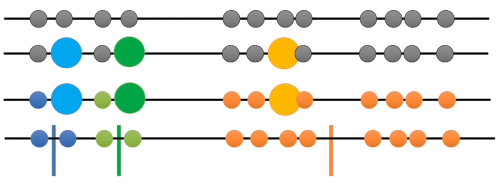
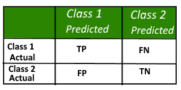
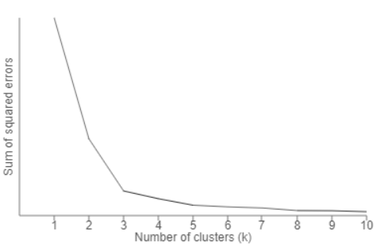
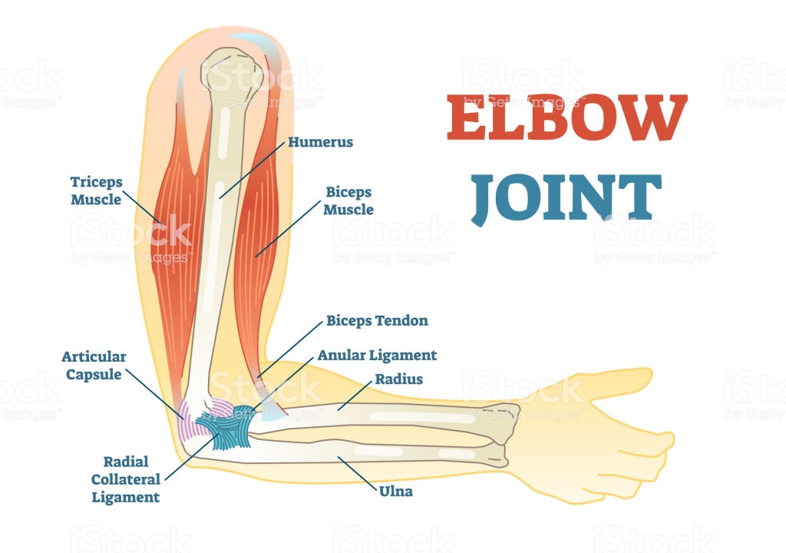

K-means
- Kmeans clustering aims to partition n observations into k clusters in which each observation belongs to the cluster with the nearest mean.
- If you want to separate different car models into 4 categories based on horsepower, engine displacement, and MPG, you can use K-means.
- Question: is Kmeans supervised or unsupervised learning?
- K represents # of centroids.

Figure Credit: https://blogs.oracle.com/bigdata/k-means-clustering-machine-learning
K-Means: How does it work?
- Here are K-means algorithm steps:
- Step 1: Choose a K: it represents the number of centroids. Hard to decide… especially for high dimensional data. You will learn how to do this in your homework 2.
- Step 2: Randomly selected centroids positions
- Step 3: Calculate distances between each data point with K centroids and decide cluster response (closer)
- Step 4: Calculate the mean value of each cluster, use the mean value as the new centroid
- Step 5: repeat step 3 and 4 until you have repeated N (maybe 100) times or centroids do not change anymore.
-
Kmeans is unsupervised learning and a clustering algorithm (involves the grouping of data points).
- The following figure shows how we decide which group a data point belongs to.

- The image below is a good cluster result using Kmeans.
 Figure Credit: https://blogs.oracle.com/bigdata/k-means-clustering-machine-learning
Figure Credit: https://blogs.oracle.com/bigdata/k-means-clustering-machine-learning
An Example
- Let’s tale a closer look at the following 2D example and review the steps.

- Things can go wrong like the image below: 
- Question: how to avoid this?
- Same steps for higher dimensional data.
Example is based on: https://www.youtube.com/watch?v=4b5d3muPQmA
Group Activity
- Group Activity 3: https://github.com/ruiwu1990/CSCI_4120/blob/master/K-Means/Group%20Activity%203.ipynb
- Finish to do section, you will have the K-means implementation from scratch.
- Seaborn is a Python data visualization library based on matplotlib. It provides a high-level interface for drawing attractive and informative statistical graphics.
- pairwise_distances_argmin: Compute minimum distances between one point and a set of points, similar to finding neighbors function from KNN
- Kmeans(k, random_state): k how many neighbours, random_state determines random number generatation for centroid initialization
- How to cluster non-linear data? Map your data into a higher dimension and apply k-means. In sklearn: SpectralClustering.
K-Means: Advantages vs Disadvantages
Advantages:
- Easy to implement.
- K-means model dynamically updated: centroid can be updated if new dataset is added.
Disadvantages:
- Hard to guess K
- Initial centroid can impact results
- K-means is time consuming. Need to calculate distances between new centroid in every loop.
- K-means method may not find out the global best solution. It sometimes returns local optimum.
- K-means is limited to linear cluster boundaries.
Classification Definition of Terms
- Based on: https://www.geeksforgeeks.org/confusion-matrix-machine-learning/
- Question: how to judge if a classification results are good or not.
- Need to learn the following concepts and then we can answer the question:
- Positive (P) : Observation is positive (for example: is an apple).
- Negative (N) : Observation is not positive (for example: is not an apple).
- True Positive (TP) : Observation is positive, and is predicted to be positive.
- False Negative (FN) : Observation is positive, but is predicted negative.
- True Negative (TN) : Observation is negative, and is predicted to be negative.
- False Positive (FP) : Observation is negative, but is predicted positive.
Confusion Matrix
- Used for classification results.
- A confusion matrix is a summary of prediction results on a classification problem.
- The number of correct and incorrect predictions are summarized with count values and broken down by each class. This is the key to the confusion matrix.
- The confusion matrix shows the ways in which your classification model is confused when it makes predictions.
- It gives us insight not only into the errors being made by a classifier but more importantly the types (to be learned) of errors that are being made.
- An example of 2-class classification problem (image below)
- Class 1 : Positive
- Class 2 : Negative
- 
- Figure credit: https://www.geeksforgeeks.org/confusion-matrix-machine-learning
K-Means: Advanced Examples
- Sample Code: https://github.com/ruiwu1990/CSCI_4120/blob/master/K-Means/05.11-K-Means.ipynb
- Example 1 Handwriting digit recognition:
- 8*8 data matrix to represent a digit handwriting image
- Each image is a data point and the centroid of each cluster is also an image
- Matplotlib imshow: render a 2D regular image
- np.zero_like(clusters): create a matrix with all zeros, the shape is the same as the “clusters” matrix.
- TSNE: a method to reduce dimension, it models each high-dimensional object by a two- or three-dimensional point in such a way that similar objects are modeled by nearby points and dissimilar objects are modeled by distant points with high probability.
- Example 2 Color Compression
- numpy.random.permutation: Randomly permute a sequence, or return a permuted range; same numbers but different orders
- Matrix.T: .T is to transpose a numpy matrix
- MiniBatchKMeans: calculate distances between the centroid and only a random sample of observations as opposed to all observations. Faster but may perform not as good as traditional K-Means.
K-Means: how to find a good K
- How to judge if a K-means algorithm is good?
- First you need a measure: one of the most popular one is named “distortion” or “SSE” based on sum of squared errors (SSE), (datapoint - centroid)^2.
- Compare distortion with K. The best K is at the rapid change point, creating elbow shape.
- This method is usually called “elbow” method because the shape is like an elbow.
- Question: why larger K, less distortion?
- 
- Figure credit: https://bl.ocks.org/rpgove/0060ff3b656618e9136b
- 
- Figure credit: https://www.dreamstime.com/elbow-joint-vector-illustrated-diagram-medical-scheme-educational-sports-injury-information-elbow-joint-vector-illustrated-diagram-image108866773
- Group Activity 4: https://github.com/ruiwu1990/CSCI_4120/blob/master/K-Means/Group%20Activity%204.ipynb
Group Homework 2: Find an Appropriate K for K-means
- Goal: learn how to find a good K using Elbow Method library
- You need to use the command “python3 hw2.py” to check the outputs
- Complete todo section in HW2: https://github.com/ruiwu1990/CSCI_4120/tree/master/HW_elbow_kmeans
- Use KElbowVisualizer to decide K for K-means
- Install:
- pip3 install yellowbrick
- Read document about the function: https://www.scikit-yb.org/en/latest/api/cluster/elbow.html
- Draw a Confusion Matrix
- README.MD file
- Team member names and email addresses
- Quick Start
- K*K matrix, K is decided in by KElbowVisualizer
- Which K works the best
- The best K accuracy
- Insert a confusion matrix for the best K
- Due September 28.
| Index | Prev |